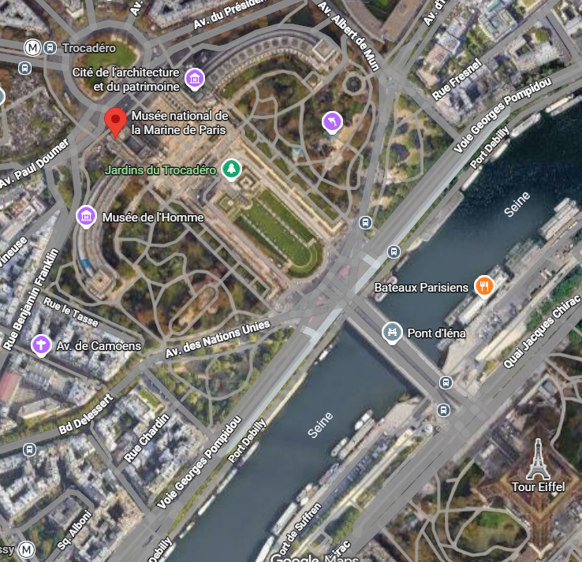
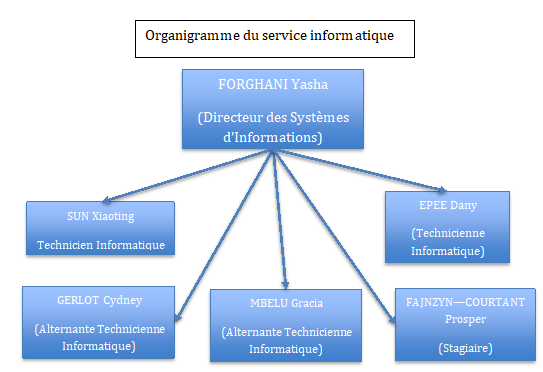

Je m'appelle Prosper Fajnzyn--Courtant, étudiant en BTS SIO option SLAM (Solutions Logicielles et Applications Métiers) au Lycée privé et UFA Robert Schuman.
Profil : approche pratique et concrète, goût pour le développement (Java) et l'administration de serveurs.
Mon parcours et mon projet professionnel
Formation
Baccalauréat : Bac Professionel Option SN (Systèmes Numeriques) Mention Très Bien
BTS SIO option SLAM – Lycée Robert Schuman – Septembre 2025 - Aout 2027
Poursuite d'études
Afin de mener à bien mon projet professionel, je pense completer mes études avec une license en développement informatique
Projet professionnel
J'aimerais devenir développeur d'application ou de site web
Mon entreprise / Stage / Alternance
Stage : Musée National de la Marine (Paris 16eme) – 5 semaines
Localisation et nombre d'employés : 17 Pl. du Trocadéro et du 11 novembre, 75116 Paris

Service d'accueil : Durant ce stage, j'ai été acceuilli au sein du service de maintenance informatique sous la direction de Monsieur Forghani
Organigramme :

Postes, outils, logiciels, infrastructures : Durant ce stage, j'ai été amené à utiliser de nombreux outils, notamment : VmWare, Connexion Bureau à distance, CollectiveAccess
Alternance : Groupe scolaire Espérance (Aulnay-sous-Bois, 93)
Service et tuteur : Service Informatique, sous la direction de Monsieur LEJARD
Postes, outils, logiciels, infrastructures : Dans cette entreprise, je suis amené à prendre en main plusieurs outils et logiciels comme : Connexion Bureau à distance, Hyper-V, l'Active Directory
Mes missions
Musée National de la Marine
Mission 1 : Au sein du Musee National de la Marine (MNM), j'ai dû changer l'OS de machines afin d'en faire don. J'ai dû installer l'OS Ubuntu sur une vingtaine de machine. Pour cela, il nous faut une clé "bootable" qui contient l'OS, il faut ensuite la brancher et changer l'odre de demarrage dans le BIOS en la placant en priorite. Une fois le redemmatage effectué, il faut suivre les instruction de l'installer Unvundu
Mission 2 : CollectiveAccess est une application web permettant de cataloguer, gérer et diffuser des collections patrimoniales. Cette derniere est Open-Source, ce qui permet d'entierement la personnaliser en fonction de nos besoins. J'utilisais cette application pour migrer les données d'un ancien systeme. En utisant la documentation publique ainsi que des forums, j'ai pu mettre en place cette solution
Groupe scolaire Espérance
Mission 1 : Les équipements du GSP ne sont pas ou peu recensés. Pour palier a cela, j'ai proposé de mettre en place un systeme d'inventaire. Cet inventaire interne contiendra des information destiné au Service Informatique. Ils y verront l'emplacement des differents équipements, notamment les PC, les imprimantes, les videos projecteurs... A terme, il pourra également contenir des factures des abonnements pour les services financiers avec une alerte afin de les prevenirs que ces derniers arrivent en fin de validité
Mes projets
Projet principal 2e année : Site pour le Lycée Privé Robert Schuman (LPRS)
Contexte : L'école souhaite développer un site web dédié à la gestion des anciens élèves (alumni) et aux relations avec les entreprises. Ce site servira de plateforme centrale pour renforcer les liens entre l'école, ses anciens élèves, et les partenaires. L'objectif est de faciliter la communication, le réseautage, et la collaboration, tout en offrant des services supplémentaires aux anciens élèves et aux entreprises.
Objectif / besoins : Ce site repondra aux objectifs suivants : le Renforcement du Réseau des Anciens Élèves, le Développement des Relations avec les Entreprises et enfin la Visibilité et la Communication
Environnement technique : Plusieurs sections seront mises en place : une pour chaque type d'utilisateurs mais également des sections commmunes avec des offres d'emploi dans les entreprises presentes
Inventaire GSP (Groupe scolaire Espérance)
Contexte : besoin d'un suivi du matériel du groupe scolaire
Objectif : ajouter, gérer, supprimer des équipements et les localiser dans une salle (salles, bâtiments, sites)
Choix de conception : pas d'historique (pas de table Utilisateur, d'historique d'état ni de table Mouvement) pour rester simple
Technologies : PHP, MySql, HTML, CSS. Les langages HTML et CSS gerent le contenu du site web et son apparence. Quand a lui, PHP permet de le rendre dynamique et Mysql gere la creation et la modification de la base de donnée utilisé par PHP
Mon rôle : Dans ce projet, je gere l'ensemble du developpement, en mettant en place des reunions intermediares afin de verifier avec les personnes concernés par ce projet si la direction que je suis leur convient
TodoListFX (1re année)
Contexte : cours de programmation JavaFX au Lycée Robert Schuman
Objectif : application de gestion de tâches avec comptes utilisateurs
Sujet : L'impact de la technologie sur la mobilité et le sport automobile. J'ai choisi ce sujet car l'automobile et plus precisement le sport automobile me passionnent depuis une dizaine d'annee. ce sujet est egalement a evolution rapide et presente de nombreuses innovations